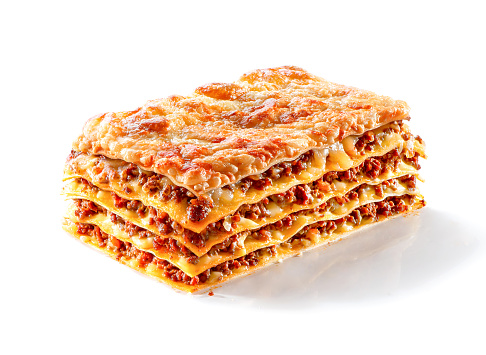

Lasagna Recipe

Desciption
Bring a large pot of lightly salted water to a boil. Cook lasagna in the boiling water, stirring occasionally until cooked through but firm to the bite, about 8 minutes. Drain.
Melt margarine in a skillet over low heat; cook and stir flour, salt, and pepper into the melted margarine until smooth and bubbling, 2 to 3 minutes. Add milk and broth into flour mixture, stirring constantly; bring sauce to a boil. Stir wine into sauce and remove from heat. Stir Parmesan cheese into sauce until smooth.
Ingridients
- 9 lasagna noodles
- ¼ cup margarine
- ¼ cup all-purpose flour
- ½ teaspoon salt
Steps
- Step 1
Bring a large pot of lightly salted water to a boil. Cook lasagna in the boiling water, stirring occasionally until cooked through but firm to the bite, about 8 minutes. Drain.
- Step 2
Preheat oven to 375 degrees F (190 degrees C).
- Step 3
Melt margarine in a skillet over low heat; cook and stir flour, salt, and pepper into the melted margarine until smooth and bubbling, 2 to 3 minutes. Add milk and broth into flour mixture, stirring constantly; bring sauce to a boil. Stir wine into sauce and remove from heat. Stir Parmesan cheese into sauce until smooth.